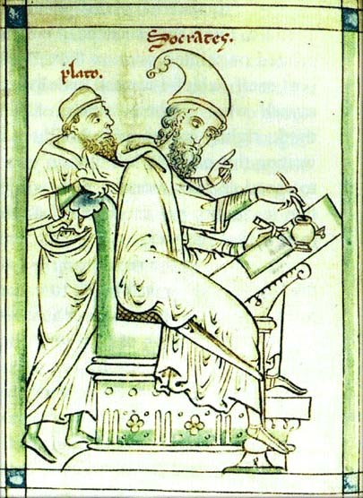

Introduction


Senior Seminar in
Literary Criticism and Theory

TOPICS
Questions We Ask
Requirements
Syllabi
Readings
Projects
Papers
KEYWORDS
Criticism
Theory
Critical Theory
Philosophy
Interpretation
Model
Practice
Application

Introduction
8/24/10
reminder to register
SYLLABUS...
Theory of what?
what is the practice?
writing literature?
meanings of literature?
theory vs. interpretation
examples vs. models
exportability
cultural / historical factors limiting
scientific understanding
application
possible, but misfits...
which applies to which...
is theory meant to explain literature?
what about literature in the service of theory?
how do examples change the model?
how does the model account for changes in the examples?
unified field theory?
Culler in the preface
talks about the importance of finding common salient features to various schools of thought that reveal shared concerns and differing solutions
what kind of theory is behind this?
a view that there is such a thing as theory that unifies them all
a view that essentially they are all trying to do the same thing
one of the challenges of this course will be to test whether or not he is right.
this is not unlike testing the verifiability of theory in science.
contradictory evidence does not invalidate the theory, but depending on the quantity and quality may impact, modify or render irrelevant the theory very quickly
for culler
theory is not obvious
complex
not easily verifiable
What Culler argues about Foucault in relation to sexuality might be easily applied to the notion that theory does not provide the obvious?
“what is achieved by the concealment“7
two questions
why is that which theory interprets in need of interpretation?
or why is it that theory complicates the object such that it is in need of interpretation?
CULLER’S POINTS:
“Theory is interdisciplinary – discourse with effects outside an original discipline.
Theory is analytical and speculative – an attempt to work out what is involved in what we call sex or language or writing or meaning or the subject.
Theory is a critique of common sense, of concepts taken as natural.
Theory is reflexive, thinking about thinking, enquiry into the categories we use in making sense of things, in literature and in other discursive practices.”